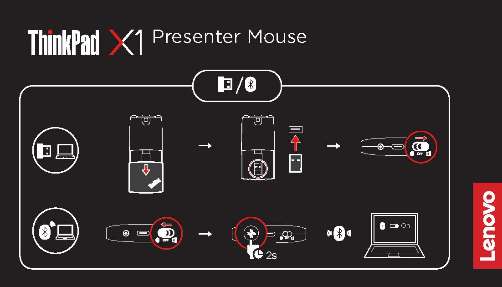
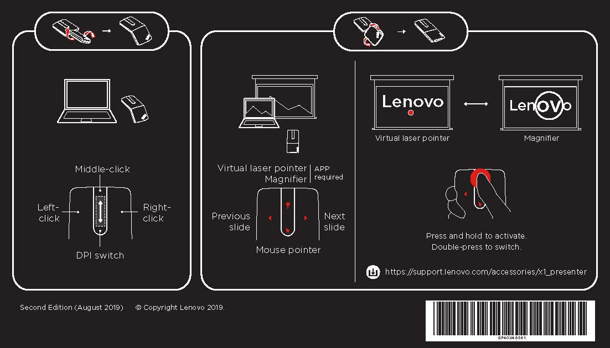

Troubleshooting
Lenovo Docking Station
The dock does not work after connected to my computer.
Ensure that:
- You use the accompanying ac power adapter, power cord, and USB-C cable.
- The dock is powered by its power adapter. The dock always needs an external power adapter for operation because it is not powered by the USB-C cable attached to your computer.
- The dock driver is installed on your computer.
- The USB-C connector on your computer works well.
The function of wireless keyboard or mouse (2.4 GHz) is interrupted. The mouse pointer lags or does not move. Some characters are lost when I input by the keyboard.
- Connect the wireless device receiver to a USB 2.0 connector on the dock.
The mouse or keyboard cannot wake up my computer when connected to the Always On USB 3.1 connector Gen 2 on the dock.
- Connect the mouse or keyboard to a USB 2.0 connector on the dock.
The charging speed for my device, such as a smartphone, is slow.
- Connect your device to the Always On USB 3.1 connector Gen 2 on the dock.
My computer cannot be charged by the dock.
Ensure that:
- You use the accompanying ac power adapter, power cord, and USB-C cable to set up the dock.
- The USB-C connector on your computer supports ac input.
I cannot hear anything through the headphone or headset connected to the dock.
To use the audio connector on the dock, ensure that the dock is the default audio device of your computer. To set the dock as the default audio device:
- Right-click the speaker icon in the Windows notification area and select Playback devices. The Sound window is displayed.
- On the Playback tab, select ThinkPad USB-C Dock Gen2 USB Audio. Then click Set Default.
- Click the Recording tab. Select ThinkPad USB-C Dock Gen2 USB Audio. Then click Set Default.
- Click OK. Note: You might need to restart the application that is using the audio devices to apply the changes.
The external display is blank.
Ensure that:
-
Your computer is running correctly and is not in sleep or hibernation mode. When the computer is in sleep or hibernation mode, the external display is always blank.
-
The dock is securely connected to ac power, computer, and external display.
-
The dock driver is installed on your computer.
-
Reduce the resolution of the external display.
-
If the problem persists, disconnect all cables from the dock, and uninstall the dock driver. Then, reinstall the dock driver and reconnect all cables to the dock. If you cannot do this, please contact your local Net Tech for assistance.
I cannot play back videos on the external display but can play them back on the computer screen.
Some computers do not support High-bandwidth Digital-content Copy Protection (HDCP), so you cannot play back protected videos on the external display connected to the dock.
ThinkPad TrackPoint Keyboard II
When I connect the USB receiver of the keyboard to the Always On USB 3.1 connector on my computer, pressing any key on the keyboard cannot wake up my computer from sleep mode.
To solve the problem, do one of the following:
-
Connect the USB receiver to any USB connector on your computer other than the Always On USB 3.1 connector.
-
Press any key on your computer to wake up the computer.
I have connected the USB receiver to a USB connector on a dock or USB hub. When I use the keyboard in the 2.4 GHz USB receiver wireless mode, the keyboard is interrupted and the TrackPoint cursor lags or cannot move.
To solve the problem, do one of the following:
-
Connect the USB receiver to a front USB 3.0 connector on the dock or hub. Avoid connecting another USB 3.0 device next to the connector with the USB receiver.
-
Use your keyboard in the Bluetooth low energy mode.
I have enabled the Fn Lock function on ThinkPad TrackPoint Keyboard II, but the Fn Lock function is not enabled on my computer keyboard.
The Fn Lock function works on its own keyboard only.
To solve the problem, press Fn+Esc on your computer keyboard to enable the Fn Lock function.
All or some of the F1-F12 function keys or key combinations on ThinkPad TrackPoint Keyboard II do not work with my computer.
To solve the problem, try the following:
-
Ensure that you have slide the operating-system switch to the correct operating system according to that on your computer.
-
Ensure that you have installed the ThinkPad TrackPoint Keyboard II software correctly.
-
Ensure that the F1-F12 function keys or key combinations are functional on your computer keyboard.
If some of them are not supported depending on the operating system and computer, they may not be supported by ThinkPad TrackPoint Keyboard II too.
The TrackPoint cursor drifts when the computer is turned on or resumes normal operation.
It is normal that the TrackPoint cursor might drift for several seconds under the following conditions:
-
The computer is turned on.
-
The computer resumes normal operation.
-
TrackPoint is kept pressed for a long time.
-
The temperature changes.
To solve the problem, do one of the following:
-
Disconnect and reconnect the keyboard.
-
Restart your computer.
ThinkPad TrackPoint Keyboard II in Bluetooth low energy mode fails to resume from sleep or hibernation mode on my computer. Ensure that the function Allow the computer to turn off this device to save power is disabled:
a. Type device manager in the search box and click Device Manager. Navigate to Bluetooth and expand all devices. Right-click the Bluetooth device of your computer, such as Intel(R) Wireless Bluetooth(R), and then select Properties.
b. Click Power Management. Clear the Allow the computer to turn off this device to save power check box. Then click OK.
ThinkPad TrackPoint Keyboard II in Bluetooth low energy mode can not be recognized by my computer.
To solve the problem, try the following:
-
Ensure that your computer supports Bluetooth low energy.
-
Ensure that your computer Bluetooth is enabled and works correctly.
-
Check the keyboard battery power. Charge it with the accompanying cable if battery power is low.
-
Ensure that the keyboard Bluetooth is enabled and works correctly.
-
Restart your computer.
-
Upgrade your computer Bluetooth driver to the latest manually or by Windows Upgrade.
-
Ensure that the keyboard is within the maximum Bluetooth range, 10 meters (33 feet).
ThinkPad TrackPoint Keyboard II input lags on my computer.
Move the keyboard closer to the computer and remove other objects with wireless signals to avoid signal interference.
ThinkPad X1 Presenter Mouse
 